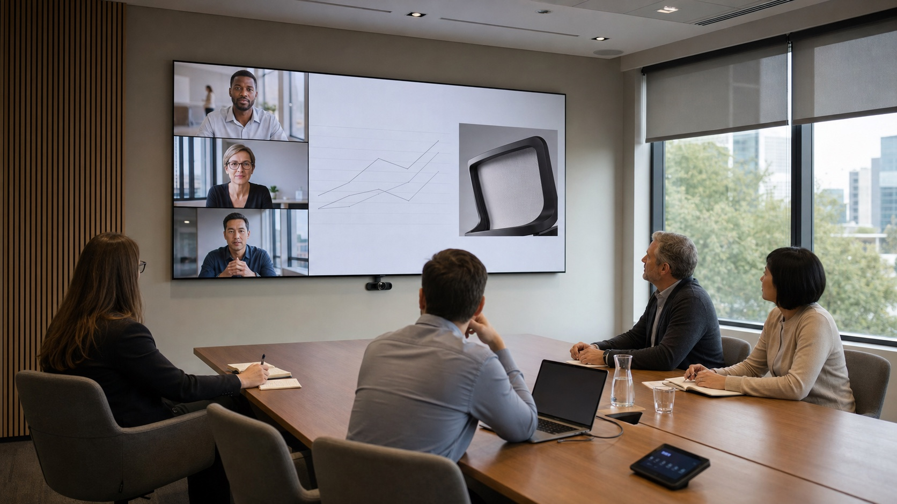

The front wall of an executive boardroom now has several jobs at once. It must keep remote participants present, make detailed shared content readable, preserve a useful camera angle, and give people in the room a clear focal point. When those needs are treated as separate equipment decisions, the room may look impressive but still feel awkward in an actual meeting.
A large MicroLED wall creates the canvas for a better result, but scale alone does not solve the room. Wall proportions, pixel pitch, camera position, audio coverage, platform layouts, lighting, source routing, and control presets must be planned as one collaboration system by the authorized dealer.

The Front Wall Is No Longer a Single Image
Traditional presentation rooms were designed around one dominant source. A laptop filled the screen, and the people in the room carried the conversation. Hybrid collaboration changes that composition. Remote faces, shared documents, live data, chat, room status, and camera framing can all matter during the same meeting.
Current collaboration platforms reflect this shift. Microsoft's Front Row guidance explicitly allocates front-of-room space among remote participants, meeting content, chat, and raised hands. Zoom Rooms similarly combines AI-assisted participant identification, speaker emphasis, camera framing, shared content, and room controls.
The display therefore needs enough usable area for the smallest critical content, not merely enough diagonal size for a video call. A financial model, design review, medical image, or technical drawing may occupy only part of the wall once participant video and meeting controls are visible. Your integrator should test the real platform layouts and source types before finalizing wall dimensions.
A Practical Front-Wall Composition
The percentages will change by room and platform. The planning principle is to reserve intentional space for people, working content, and meeting context before choosing the final wall geometry.
Camera Placement Belongs in the Wall Geometry
A camera mounted after the display is designed often ends up too high, too low, or off axis. The result is a familiar hybrid-meeting problem: people look toward remote participants on the wall while the camera records them looking somewhere else.
Microsoft's room-design guidance notes that a centered camera below the front display is often a practical position, while also requiring the field of view and room geometry to be checked. That is a starting point, not a universal answer. Wall height, table shape, seat positions, lens choice, camera count, and the intended size of remote faces all affect the decision.
AI framing does not remove this physical work. Speaker tracking and participant segmentation can improve the outgoing image only when the cameras have useful views to begin with. The dealer should map the capture zones, check foreground obstructions, verify that the nearest seats do not dominate the frame, and confirm that far seats remain identifiable.
Specify for the Smallest Critical Detail
Boardroom display sizing should begin with what decision-makers need to read. If a dense spreadsheet, dashboard label, drawing annotation, or shared document becomes illegible when the platform adds participant video, the wall is not doing its job.
The authorized dealer evaluates the farthest critical seat, the expected content layouts, the amount of the wall reserved for remote participants, and the required text or graphic detail. Pixel pitch is then selected in relation to the closest viewing position, while wall dimensions are checked against both the closest and farthest seats.
This is why a custom-format MicroLED wall can be valuable in an executive room. The display can be proportioned around the actual front elevation and collaboration layout instead of forcing the room into a conventional screen shape. The integrator still has to confirm source resolution, processor mapping, scaling, and how each conferencing platform uses that canvas.
Audio Must Follow the Visual Conversation
When remote participants appear across a wide wall, sound that arrives from one unrelated ceiling location can weaken the sense of connection. The audio design should support intelligibility first, then preserve a believable relationship between the person on screen and the sound in the room.
That may involve stereo loudspeakers near the front wall, distributed reinforcement for a long table, beamforming microphones, acoustic treatment, and digital signal processing tuned to the actual seating. The solid MicroLED surface, glazing, table, ceiling, and decorative finishes all influence reflections and echo behavior.
The dealer balances those constraints with the interior design. A visually minimal room may favor concealed or carefully integrated speakers, but concealment can limit ideal placement or output. The right answer is the one that makes the tradeoffs explicit and protects speech clarity across every occupied seat.
Lighting Has Two Audiences
People in the room need comfortable illumination without glare on the wall. Cameras need even facial light and controlled contrast. The display needs a brightness state that looks natural in person and does not become an overexposed background in the outgoing video.
Window treatments, fixture angles, color temperature, daylight scenes, and camera exposure should be tested together. A room can look balanced to the eye while producing dark faces or a clipped display on camera. Presets should account for daytime meetings, evening calls, local presentations, and camera-off use rather than relying on one lighting scene.
Source Routing Should Be Invisible to the Meeting
An executive room may need to support a dedicated room system, guest laptops, wireless presentation, secure enterprise sources, local dashboards, and more than one conferencing platform. The user should not have to understand the switching architecture to begin a meeting.
The integrator defines what appears locally, what is sent to remote participants, what happens when content sharing stops, and how the room returns to a known state. This is especially important when confidential local sources must not be transmitted automatically.
Useful presets are named around intent: start meeting, present locally, executive briefing, and room reset. Each preset can coordinate the display layout, source path, camera, microphones, loudspeakers, lighting, and shades. The interface remains simple because the technical decisions were made before the meeting began.
What the Integrator Is Actually Deciding
Your authorized dealer is coordinating wall dimensions, pixel pitch, content layouts, camera count and placement, microphone coverage, speaker geometry, acoustic treatment, room lighting, shades, source routing, network requirements, conferencing platforms, control presets, equipment location, and service access. The dealer also tests how those choices work together from the real seats, with the real content and meeting platforms the organization uses.
A Better Canvas Starts With a Better Room Plan
AI features can make a hybrid meeting more responsive, but they do not correct a poorly planned room. Cameras still need clear views. Microphones still need coverage. Shared content still needs enough pixels and physical size to remain legible. People still need a natural place to look.
An Opal MicroLED wall gives the project team a large, seamless canvas that can be shaped around those needs. The authorized dealer turns that canvas into a working collaboration environment by resolving the physical room, signal path, platform behavior, and controls as one system.
Plan the Boardroom as One System
Connect with an authorized Opal dealer to evaluate wall geometry, viewing distance, camera placement, content layouts, audio, routing, and control for your executive meeting space.
Find Your Integrator